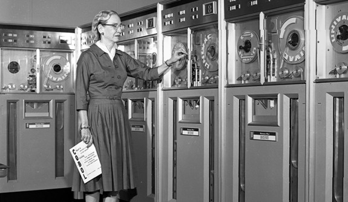

Main Content
Grace Hopper was an American computer scientist and United States Navy rear admiral. One of the first programmers of theHarvard Mark I computer, she was a pioneer of computer programming who invented one of the first compiler related tools. She popularized the idea of machine-independent programming languages, which led to the development of COBOL, an early high-level programming language still in use today.
Hopper attained a Ph.D. in mathematics from Yale University and was a professor of mathematics at Vassar College. Hopper began her computing career in 1944 when she worked on the Harvard Mark I team led by Howard H. Aiken. In 1949, she joined the Eckert–Mauchly Computer Corporation and was part of the team that developed the UNIVAC I computer.
She believed that a programming language based on English was possible. Her program converted English terms into machine code understood by computers. By 1952, Hopper had finished her program linker, which was written for the A-0 System.
The Cray XE6 "Hopper" supercomputer at NERSC was named after her. Hopper was awarded 40 honorary degrees from universities across the world. In 1991, she received the National Medal of Technology and on November 22, 2016, she was awarded the Presidential Medal of Freedom by Barack Obama.